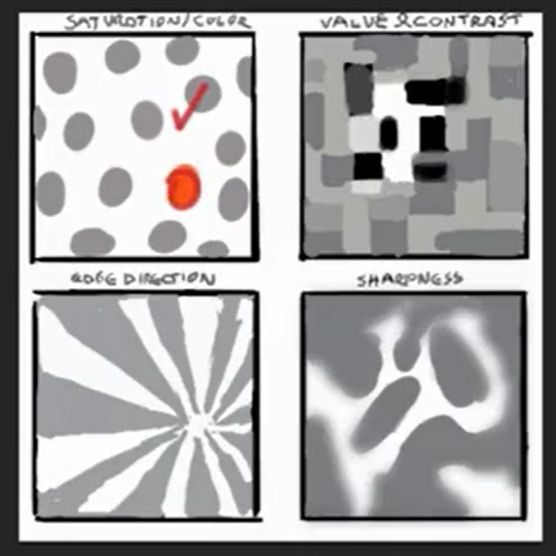
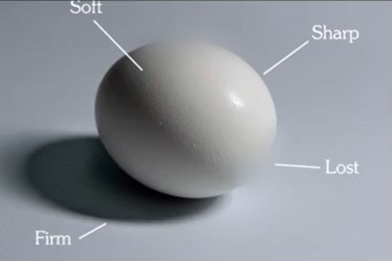

(-w-)
- 塑造 = 调子 + 笔触

纯度对比、视觉引导、边缘虚实对比、疏密对比、冷暖色相对比。
控制阅读顺序
# 固有色配色
-
先决定配色（占比大）
- 偏灰
- 相似色（红橙黄 / 青蓝紫）配色色倾向一致，冷暖一致
- 可以改变的是亮暗关系
-
主角色（焦点区）
- 高纯度
- 脸、手、装饰物品
- 与配色形成明度对比
固有色图层合并
# 边缘的四种层级
- sharp
- firm
- soft
- lost
边缘控制取决于对笔刷的熟练度

经过良好明暗交界线训练应大胆使用二级边过度
# 明暗交界线
漫射光 + 直射光
1、全局光 / 阴天光
2、营造环境（正片叠底）
3、直射光（线性减淡）
透光（SSS）子面散射（柔光）
细节来源于最小色块：高光卡点，闭塞卡点，分子特效
# 正负形
根据外轮廓或明暗交界线划分的黑白。
只要轮廓线足够精致和清晰，就可以骗取信息量。
阈值、通道将黑白二分分别建立图层，之后图层变暗改变白色部分调子，图层变亮改变黑色部分调子
笔刷
- 塑性笔：圆头硬边干笔刷
- 信息量 - 调子笔：湿笔刷
- 纹理笔：有颗粒和纹理的笔刷
- 每只笔都有 2-3 种功能。炭笔可以起到三种效果
重点在于黑白负形的概括和设计
- 从阈值照片尽量合并堆叠黑白色块 —— 整理疏密关系
- 大小色块连接合并，点线面结合，小结构增加信息量。但主要是整的，小结构不能太多太碎
整形，避免斑马线。
完型理论
暗中暗用微妙调子梯度衔接，暗中暗的对比不能超过明暗对比
# 信息量
结构信息，明度信息，色彩信息，结构信息，材质暗示信息，环境光固有色信息，空气信息
完成度来源于信息量的丰富
# 环境光
环境光越纯、暗，物体本来的固有色将无法表现
最足够明亮的白光中才会体现固有色
暖色物体被冷光照到会比较灰，冷色物体被冷光找到会比较纯